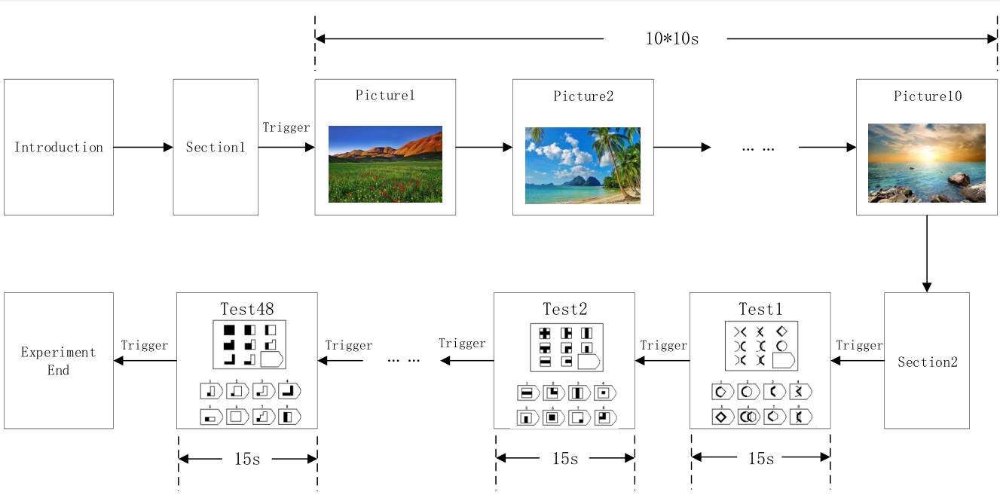

dataset summary
The Confuse dataset consists of two parts:
The ratings from an online self-assessment where 120 one-minute extracts of music videos were each rated
by 14-16 volunteers based on arousal, valence and dominance.
The participant ratings, physiological recordings and face video of an experiment where 32 volunteers
watched a subset of 40 of the above music videos. EEG and physiological signals were recorded and each
participant also rated the videos as above. For 22 participants frontal face video was also recorded.
For a more thorough explanation of the dataset collection and its contents, see [1]

file listing
The following files are available (each explained in more detail below):
File name Format Part Contents
Online_ratings xls, csv, ods spreadsheet Online self-assessment All individual ratings from the online
self-assessment.
Video_list xls, csv, ods spreadsheet Both parts Names/YouTube links af the music videos used in the
online self-assessment and the experiment + stats of the individual ratings from the online
self-assessment.
Participant_ratings xls, csv, ods spreadsheet Experiment All ratings participants gave to the videos
during the experiment.
Participant_questionnaire xls, csv, ods spreadsheet Experiment The answers participants gave to the
questionnaire before the experiment.
Face_video Zip file Experiment The frontal face video recordings from the experiment for participants
1-22.
Data_original Zip file Experiment The original unprocessed physiological data recordings from the
experiment in BioSemi .bdf format
Data_preprocessed Zip file for Python and Matlab Experiment The preprocessed (downsampling, EOG removal,
filtering, segmenting etc.) physiological data recordings from the experiment in Matlab and
Python(numpy) formats
file details
online_ratings
This file contains all the individual video ratings collected during the online self-assessment. The
file is available in Open-Office Calc (online_ratings.ods), Microsoft Excel (online_ratings.xls), and
Comma-separated values (online_ratings.csv) formats.
The ratings were collected using an online self-assessment tool as described in [1]. Participants rated
arousal, valence and dominance using SAM mannequins on a discrete 9-point scale. In addition,
participants also rated the felt emotion using an emotion wheel (see [2]).
The table in the file has one row per individual rating and the following columns: